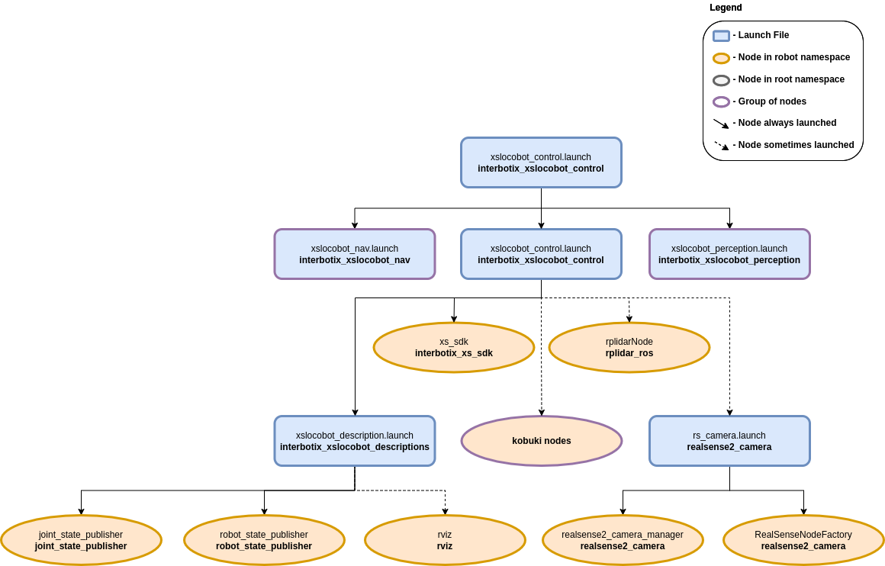

Python Demos
 View Package on GitHub
View Package on GitHub
Overview
This page showcases various ways of using the Interbotix Python LoCoBot Module (click the link to see the fully documented code). Simply put, this API was created so that users with little to no ROS experience would still have the ability to control any Interbotix LoCoBot supported by the interbotix_xs_sdk. Specifically, the API also allows a user to make an arm go to desired end-effector poses or follow Cartesian trajectories. This last feature was made possible by the Modern Robotics: Mechanics, Planning, and Control Code Library created at Northwestern University. It also allows the ability to move the camera pan/tilt servos and send velocity commands to the base.
For the API to work, the arm and pan/tilt joints must be set to 'position' control and the gripper set to 'PWM' control (conveniently, these are the default configs in the interbotix_xslocobot_control package). Furthermore, the API assumes that all the arm-joint motors' Drive Mode registers are set to Time-Based-Profile (this is also the default configuration). In a nutshell, this setting makes it very easy for you as the user to customize the duration and smoothness of an arm's motion from one pose to the next.
Structure
The Python LoCoBot module (located in the interbotix_xs_modules ROS package) builds on top of the interbotix_xs_sdk package. To get familiar with the other nodes in the graph above, look at the various packages READMEs.
- robot_manipulation - a ROS node (operating 'behind the scenes') that takes in commands
entered via the Python API and publishes data to various ROS topics as necessary. It is not a
classic ROS node in the sense that it can't be launched from a ROS launch file or run from the
terminal using a
rosruncommand. Rather, the Python API module contains a class that when instantiated, gives the node life. At the completion of a program, the object gets destroyed, killing the node.
Usage
To get started, open up a terminal and type (assuming the locobot_wx250s is being launched with the lidar shown but not active)...
$ roslaunch interbotix_xslocobot_control xslocobot_python.launch robot_model:=locobot_wx250s show_lidar:=true
In another terminal, navigate to this directory and type...
$ python bartender.py # python3 bartender.py if using ROS Noetic
You should observe the robot pick up a virtual bottle (from behind a virtual bar), rotate so that the end-effector is facing the opposite direction, pour a virtual drink (on the virtual bar), then place the 'bottle' down, and go to its Sleep pose.
The other scripts work in a similar fashion, but you must make sure to change the robot name in the file to the arm you have. You might also have to adjust the commanded poses/trajectories if working with smaller arm models (like the PincherX 100) as some of them might by physically unattainable. To make things easier, each script also outlines the commands necessary to get the robot moving!
Note
If you want to test out your code first on a simulated arm, make sure to set the use_sim
arg to true like this:
$ roslaunch interbotix_xslocobot_control xslocobot_python.launch robot_model:=locobot_wx250s show_lidar:=true use_sim:=true
For reference, other launch file arguments are shown below. Depending on if you are doing SLAM, perception, or arm manipulation, you can start the launch file accordingly.
| Argument | Description | Default Value |
|---|---|---|
| robot_model | model type of the Interbotix LoCoBot such as 'locobot_px100' or 'locobot_wx250s' | "" |
| use_nav | whether to launch the Navigation Stack | false |
| use_perception | whether to launch the Perception Pipeline | false |
| use_armtag | whether to use the AprilTag on the arm when working with the Perception Pipeline | false |
| use_static_transform_pub | whether to launch the static_trans_pub node which is responsible for loading transforms from the static_transforms.yaml file and publishing them to the /tf tree | false |
| use_sim | if true, the DYNAMIXEL simulator node is run; use RViz to visualize the robot's motion; if false, the real DYNAMIXEL driver node is run | false |
| robot_name | name of the robot (could be anything but defaults to 'locobot') | "locobot" |
| show_gripper_bar | if true, the gripper_bar link is included in the 'robot_description' parameter; if false, the gripper_bar and finger links are not loaded to the parameter server. Set to false if you have a custom gripper attachment | true |
| show_gripper_fingers | if true, the gripper fingers are included in the 'robot_description' parameter; if false, the gripper finger links are not loaded to the parameter server. Set to false if you have custom gripper fingers | true |
| external_urdf_loc | the file path to the custom urdf.xacro file that you would like to include in the Interbotix robot's urdf.xacro file | "" |
| use_rviz | launches RViz; if you are SSH'd into the robot, DON'T set this to true | false |
| rviz_frame | fixed frame in RViz; this should be changed to map or <robot_name>/odom if mapping or using local odometry respectively |
$(arg robot_name)/base_footprint |
| use_base | if true, the base ROS nodes are launched | $(arg use_nav) |
| use_lidar | if true, the RPLidar node is launched | false |
| show_lidar | set to true if the lidar is installed on the robot; this will load the lidar related links to the 'robot_description' parameter | $(arg use_lidar) |
| use_camera | if true, the RealSense D435 camera nodes are launched | refer to xslocobot_python.launch |
| filters | types of RealSense camera filters to use (in this case, the 'pointcloud' filter is needed) | pointcloud |
| align_depth | whether to publish topics with the depth stream aligned with the color stream | $(arg use_nav) |
| color_fps | frame rate of the color images taken on the RealSense camera | 30 |
| depth_fps | frame rate of the depth images taken on the RealSense camera | 30 |
| color_width | horizontal resolution of the color images taken on the RealSense camera | 640 |
| color_height | vertical resolution of the color images taken on the RealSense camera | 480 |
| load_configs | a boolean that specifies whether or not the initial register values (under the 'motors' heading) in a Motor Config file should be written to the motors; as the values being written are stored in each motor's EEPROM (which means the values are retained even after a power cycle), this can be set to false after the first time using the robot. Setting to false also shortens the node startup time by a few seconds and preserves the life of the EEPROM | true |
| localization | if true, Rtabmap opens in localization only mode; if false, Rtabmap open in SLAM mode | false |
| rtabmap_args | arguments that should be passed to the rtabmap node; note that these arguments are in addition to the arguments already specified in the rtabmap_default_args argument in the xslocobot_nav.launch file | "" |
| use_rtabmapviz | whether or not to use Rtabmap's Visualization tool; it's not really necessary as Rtabmap already has RViz display plugins | false |
| rtabmapviz_args | arguments to pass to the Rtabmapviz visualization node | "" |
| database_path | location where all the mapping data Rtabmap collects should be stored | "~/.ros/rtabmap.db" |
| camera_tilt_angle | desired angle [rad] that the D435 camera should be tilted when doing SLAM or localization | 0.2618 |
| filter_ns | name-space where the pointcloud related nodes and parameters are located | $(arg robot_name)/pc_filter |
| filter_params | file location of the parameters used to tune the perception pipeline filters | refer to xslocobot_python.launch |
| use_pointcloud_tuner_gui | whether to show a GUI that a user can use to tune filter parameters | false |
| enable_pipeline | whether to enable the perception pipeline filters to run continuously; to save computer processing power, this should be set to False unless you are actively trying to tune the filter parameters; if False, the pipeline will only run if the get_cluster_positions ROS service is called | $(arg use_pointcloud_tuner_gui) |
| cloud_topic | the absolute ROS topic name to subscribe to raw pointcloud data | /$(arg robot_name)/camera/depth/color/points |
| tag_family | family to which the AprilTag belongs | tagStandard41h12 |
| standalone_tags | individual AprilTags the algorithm should be looking for | refer to xslocobot_python.launch |
| camera_frame | the camera frame in which the AprilTag will be detected | $(arg robot_name)/camera_color_optical_frame |
| apriltag_ns | name-space where the AprilTag related nodes and parameters are located | $(arg robot_name)/apriltag |
| camera_color_topic | the absolute ROS topic name to subscribe to color images | $(arg robot_name)/camera/color/image_raw |
| camera_info_topic | the absolute ROS topic name to subscribe to the camera color info | $(arg robot_name)/camera/color/camera_info |
| armtag_ns | name-space where the Armtag related nodes and parameters are located | $(arg robot_name)/armtag |
| ref_frame | the reference frame that the armtag node should use when publishing a static transform for where the arm is relative to the camera | $(arg robot_name)/base_link |
| arm_base_frame | the child frame that the armtag node should use when publishing a static transform for where the arm is relative to the camera | $(arg robot_name)/plate_link |
| arm_tag_frame | name of the frame on the arm where the AprilTag is located (defined in the URDF usually) | $(arg robot_name)/ar_tag_link |
| use_armtag_tuner_gui | whether to show a GUI that a user can use to publish the 'ref_frame' to 'arm_base_frame' transform | false |
| position_only | whether only the position component of the detected AprilTag pose should be used when calculating the 'ref_frame' to 'arm_base_frame' transform; this should only be set to true if a tf chain already exists connecting the camera and arm base_link frame, and you just want to use the AprilTag to refine the pose further | true |
| load_transforms | whether or not the static_trans_pub node should publish any poses stored in the static_transforms.yaml file at startup; this should only be set to false if a tf chain already exists connecting the camera and arm base_link frame (usually defined in a URDF), and you'd rather use that tf chain as opposed to the one specified in the static_transforms.yaml file | true |
| transform_filepath | filepath to the static_transforms.yaml file used by the static_trans_pub node; if the file does not exist yet, this is where you'd like the file to be generated | refer to xslocobot_python.launch |